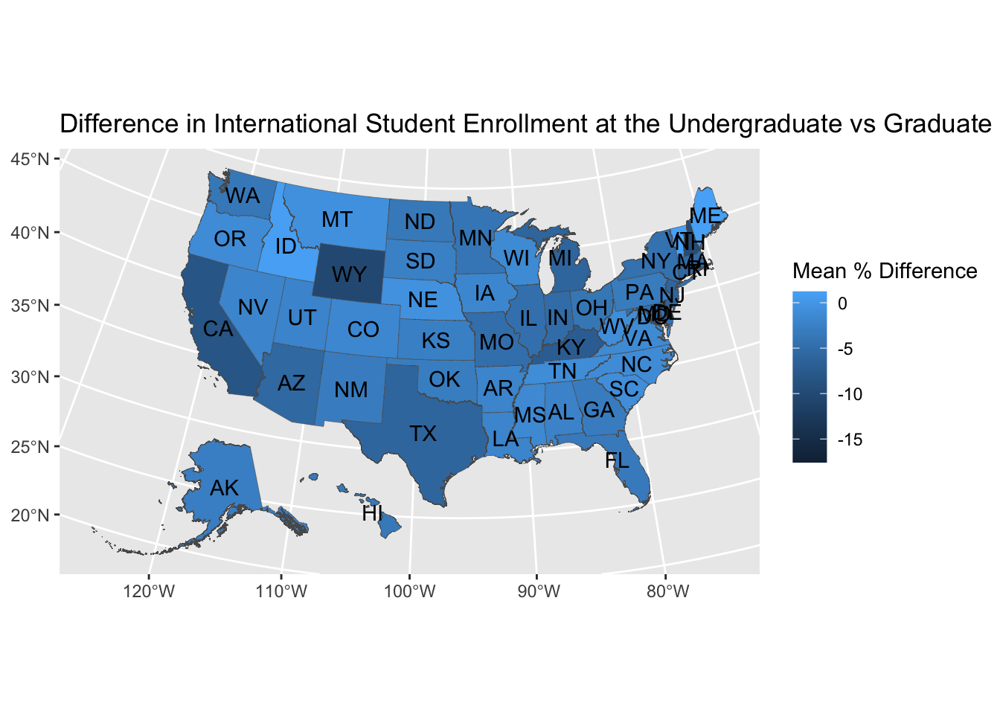

## ---------------------------
##' [Libraries]
## ---------------------------
library(tidyverse)V: IPEDS Application
- Now, let’s look at a more realistic example when we would use these skills for data analysis
- Let’s say we want to explore difference in international student enrollment at the undergraduate vs graduate level and if that varies by institution type and location
- For this, we are going to use two IPEDS data sets HD2022 and EFFY2022
data_info <- read_csv("data/hd2022.csv") |>
rename_all(tolower) # convert all column names to lowercase
data_enroll <- read_csv("data/effy2022.csv") |>
rename_all(tolower)- Let’s take a look at these data one by one
data_info# A tibble: 6,256 × 73
unitid instnm ialias addr city stabbr zip fips obereg chfnm chftitle
<dbl> <chr> <chr> <chr> <chr> <chr> <chr> <dbl> <dbl> <chr> <chr>
1 100654 Alabama A… AAMU 4900… Norm… AL 35762 1 5 Dr. … Preside…
2 100663 Universit… UAB Admi… Birm… AL 3529… 1 5 Ray … Preside…
3 100690 Amridge U… South… 1200… Mont… AL 3611… 1 5 Mich… Preside…
4 100706 Universit… UAH … 301 … Hunt… AL 35899 1 5 Chuc… Preside…
5 100724 Alabama S… <NA> 915 … Mont… AL 3610… 1 5 Quin… Preside…
6 100733 Universit… <NA> 500 … Tusc… AL 35401 1 5 Fini… Chancel…
7 100751 The Unive… <NA> 739 … Tusc… AL 3548… 1 5 Dr. … Preside…
8 100760 Central A… <NA> 1675… Alex… AL 35010 1 5 Jeff… Preside…
9 100812 Athens St… <NA> 300 … Athe… AL 35611 1 5 Dr. … Interim…
10 100830 Auburn Un… AUM||… 7440… Mont… AL 3611… 1 5 Carl… Chancel…
# ℹ 6,246 more rows
# ℹ 62 more variables: gentele <dbl>, ein <chr>, ueis <chr>, opeid <chr>,
# opeflag <dbl>, webaddr <chr>, adminurl <chr>, faidurl <chr>, applurl <chr>,
# npricurl <chr>, veturl <chr>, athurl <chr>, disaurl <chr>, sector <dbl>,
# iclevel <dbl>, control <dbl>, hloffer <dbl>, ugoffer <dbl>, groffer <dbl>,
# hdegofr1 <dbl>, deggrant <dbl>, hbcu <dbl>, hospital <dbl>, medical <dbl>,
# tribal <dbl>, locale <dbl>, openpubl <dbl>, act <chr>, newid <dbl>, …- Okay, this looks simple enough, we see one row per institution followed by a bunch of descriptive variables
- Let’s look at our enrollment data
data_enroll# A tibble: 117,521 × 72
unitid effyalev effylev lstudy xeytotlt efytotlt xeytotlm efytotlm xeytotlw
<dbl> <dbl> <dbl> <dbl> <chr> <dbl> <chr> <dbl> <chr>
1 100654 1 1 999 R 6681 R 2666 R
2 100654 2 2 1 R 5663 R 2337 R
3 100654 3 -2 1 R 5621 R 2323 R
4 100654 4 -2 1 R 1680 R 722 R
5 100654 5 -2 1 R 3941 R 1601 R
6 100654 11 -2 1 R 42 R 14 R
7 100654 12 4 3 R 1018 R 329 R
8 100654 19 -2 1 R 361 R 177 R
9 100654 20 -2 1 R 3580 R 1424 R
10 100654 21 -2 999 R 5460 R 2169 R
# ℹ 117,511 more rows
# ℹ 63 more variables: efytotlw <dbl>, xefyaiat <chr>, efyaiant <dbl>,
# xefyaiam <chr>, efyaianm <dbl>, xefyaiaw <chr>, efyaianw <dbl>,
# xefyasit <chr>, efyasiat <dbl>, xefyasim <chr>, efyasiam <dbl>,
# xefyasiw <chr>, efyasiaw <dbl>, xefybkat <chr>, efybkaat <dbl>,
# xefybkam <chr>, efybkaam <dbl>, xefybkaw <chr>, efybkaaw <dbl>,
# xefyhist <chr>, efyhispt <dbl>, xefyhism <chr>, efyhispm <dbl>, …- Hmm, so this data definitely appears to be “long” as we see those first 10 rows are all for 100654
- Based on visual inspection, it seems like effyalev and effylev might be what is making the data “long” for two reasons
- First, look at the values, they seem to be in some kind of pattern
- Second, it’s common practice to keep the “long” variables at the start, especially in larger published data like this
- This is where we want to look through the code book to explore what those variables might mean
- Based on visual inspection, it seems like effyalev and effylev might be what is making the data “long” for two reasons
Quick Exercise
- To practice this, let’s go to the IPEDS Data Center and find the dictionary for EFFY2022
- Tip: For IPEDS dictionary files, the “frequencies” tab is where you’ll find out what numbers that represent something mean
- Okay, so what do effyalev and effylev mean?
- Think back to our research question, what’s the ratio of international students at the undergraduate vs graduate level?
- Based on the code book, what do you think we need to do now?
effyalevis probably more detail than we need for our question,effylevhas everything we need- To make our life simpler, let’s reduce our data down a little to just the variables we want with
select()
- To make our life simpler, let’s reduce our data down a little to just the variables we want with
data_enroll <- data_enroll |>
select(unitid, effylev, efytotlt, efynralt)
data_enroll# A tibble: 117,521 × 4
unitid effylev efytotlt efynralt
<dbl> <dbl> <dbl> <dbl>
1 100654 1 6681 104
2 100654 2 5663 53
3 100654 -2 5621 53
4 100654 -2 1680 12
5 100654 -2 3941 41
6 100654 -2 42 0
7 100654 4 1018 51
8 100654 -2 361 10
9 100654 -2 3580 31
10 100654 -2 5460 95
# ℹ 117,511 more rows- Next, let’s reduce our data down to just the two rows containing undergraduate and graduate enrollments
data_enroll <- data_enroll |>
filter(effylev %in% c(2,4))
data_enroll# A tibble: 7,817 × 4
unitid effylev efytotlt efynralt
<dbl> <dbl> <dbl> <dbl>
1 100654 2 5663 53
2 100654 4 1018 51
3 100663 2 15360 415
4 100663 4 10603 1047
5 100690 2 351 0
6 100690 4 565 0
7 100706 2 8536 187
8 100706 4 2606 234
9 100724 2 3899 60
10 100724 4 526 8
# ℹ 7,807 more rowsOkay, this is starting to look more manageable, right?
What do we need to do next to be able to compare across levels of study or institutions?
data_enroll <- data_enroll |>
mutate(perc_intl = efynralt/efytotlt*100) |>
select(-efytotlt, -efynralt) # - in select means drop this variable
data_enroll# A tibble: 7,817 × 3
unitid effylev perc_intl
<dbl> <dbl> <dbl>
1 100654 2 0.936
2 100654 4 5.01
3 100663 2 2.70
4 100663 4 9.87
5 100690 2 0
6 100690 4 0
7 100706 2 2.19
8 100706 4 8.98
9 100724 2 1.54
10 100724 4 1.52
# ℹ 7,807 more rowsNow, we want to find the difference between the undergraduate and graduate enrollment levels, which should be pretty simple math right? We just need to subtract the percentages from each other
- Can we easily do that right now? If not, what do we need to do?
data_enroll <- data_enroll |>
pivot_wider(names_from = effylev,
values_from = perc_intl,
names_prefix = "perc_intl_")
data_enroll# A tibble: 6,036 × 3
unitid perc_intl_2 perc_intl_4
<dbl> <dbl> <dbl>
1 100654 0.936 5.01
2 100663 2.70 9.87
3 100690 0 0
4 100706 2.19 8.98
5 100724 1.54 1.52
6 100751 1.62 10.7
7 100760 0.406 NA
8 100812 0.0577 0
9 100830 4.32 37.5
10 100858 4.42 17.7
# ℹ 6,026 more rows- Now is our calculation much easier to make?
data_enroll <- data_enroll |>
mutate(perc_intl_diff = perc_intl_2 - perc_intl_4)
data_enroll# A tibble: 6,036 × 4
unitid perc_intl_2 perc_intl_4 perc_intl_diff
<dbl> <dbl> <dbl> <dbl>
1 100654 0.936 5.01 -4.07
2 100663 2.70 9.87 -7.17
3 100690 0 0 0
4 100706 2.19 8.98 -6.79
5 100724 1.54 1.52 0.0179
6 100751 1.62 10.7 -9.04
7 100760 0.406 NA NA
8 100812 0.0577 0 0.0577
9 100830 4.32 37.5 -33.2
10 100858 4.42 17.7 -13.3
# ℹ 6,026 more rowsHow do we interpret our new variable?
Let’s get some basic summary statistics
data_enroll |>
drop_na() |>
summarize(mean = mean(perc_intl_diff),
min = min(perc_intl_diff),
max = max(perc_intl_diff))# A tibble: 1 × 3
mean min max
<dbl> <dbl> <dbl>
1 -3.84 -96.8 41.5Lastly, let’s see if this trend varies by private vs public institutions
What do we need to do to see that?
data_info <- data_info |>
select(unitid, control)
data_joined <- left_join(data_enroll, data_info, by = "unitid")
data_joined# A tibble: 6,036 × 5
unitid perc_intl_2 perc_intl_4 perc_intl_diff control
<dbl> <dbl> <dbl> <dbl> <dbl>
1 100654 0.936 5.01 -4.07 1
2 100663 2.70 9.87 -7.17 1
3 100690 0 0 0 2
4 100706 2.19 8.98 -6.79 1
5 100724 1.54 1.52 0.0179 1
6 100751 1.62 10.7 -9.04 1
7 100760 0.406 NA NA 1
8 100812 0.0577 0 0.0577 1
9 100830 4.32 37.5 -33.2 1
10 100858 4.42 17.7 -13.3 1
# ℹ 6,026 more rows- Looks like we have what we need, so let’s see if the mean varies by institutional control
data_joined |>
group_by(control) |>
drop_na() |>
summarize(mean = mean(perc_intl_diff))# A tibble: 3 × 2
control mean
<dbl> <dbl>
1 1 -5.84
2 2 -2.63
3 3 -4.94Now let’s find out if out trend varies by states and make a map to visualize it
Let’s first read in the packages we need for making maps
library(sf)
library(tigris)
options(tigris_use_cache = TRUE)- Now we want to get the state information for each institution
data_info_state <- data_info <- read_csv("data/hd2022.csv") |>
rename_all(tolower) |>
select(unitid, stabbr)- Next, we want to join the state information to our enrollment data
data_joined_state <- left_join(data_enroll, data_info_state, by = "unitid")
data_joined_state# A tibble: 6,036 × 5
unitid perc_intl_2 perc_intl_4 perc_intl_diff stabbr
<dbl> <dbl> <dbl> <dbl> <chr>
1 100654 0.936 5.01 -4.07 AL
2 100663 2.70 9.87 -7.17 AL
3 100690 0 0 0 AL
4 100706 2.19 8.98 -6.79 AL
5 100724 1.54 1.52 0.0179 AL
6 100751 1.62 10.7 -9.04 AL
7 100760 0.406 NA NA AL
8 100812 0.0577 0 0.0577 AL
9 100830 4.32 37.5 -33.2 AL
10 100858 4.42 17.7 -13.3 AL
# ℹ 6,026 more rows- We can again calculate the mean by states, just like what we did with institutional control
data_joined_state <- data_joined_state |>
group_by(stabbr) |>
drop_na() |>
summarize(mean_perc_intl_diff = mean(perc_intl_diff))
data_joined_state# A tibble: 54 × 2
stabbr mean_perc_intl_diff
<chr> <dbl>
1 AK -2.73
2 AL -2.26
3 AR -2.01
4 AZ -5.61
5 CA -8.29
6 CO -1.55
7 CT -5.82
8 DC -2.76
9 DE -17.6
10 FL -3.44
# ℹ 44 more rows- We are finally ready to make a map! We can use the
tigrispackage to get the state boundaries
states_sf <- states(cb = TRUE, year = 2022) |>
filter(STUSPS %in% state.abb | STUSPS == "DC") |>
left_join(data_joined_state, by = c("STUSPS" = "stabbr"))- Plotting time!
ggplot() +
geom_sf(data = shift_geometry(states_sf),
aes(fill = mean_perc_intl_diff),
size = 0.1) +
geom_sf_text(data = shift_geometry(st_centroid(states_sf)),
aes(label = STUSPS))